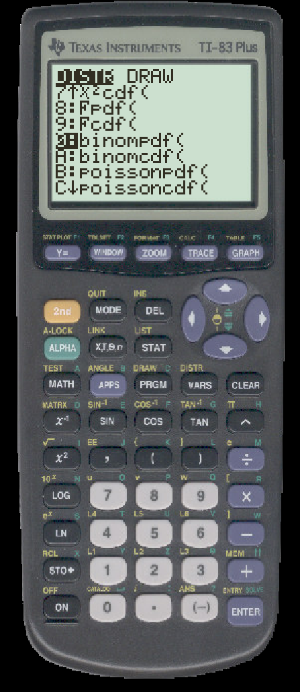

TO CALCULATE BINOMIAL PROBABILITIES ON THE TI
Suppose that x is a random variable with a binomial distribution with n=100 and p=0.5.
We first calculate P(x=45).
- First press 2ND then DISTR (the VARS button)
- You should see
- Scroll down until you see the binomial distribution options.

- Select ``binompdf('' and you will see
- Enter the arguments in the order n, p, x
- Press ENTER and you will see
Next, we calculate P(x ≤ 45).
- First press 2ND then DISTR (the VARS button). Scroll down to select ``binomcdf(''
- Enter the arguments in the order n, p, x
- Press ENTER and you will see